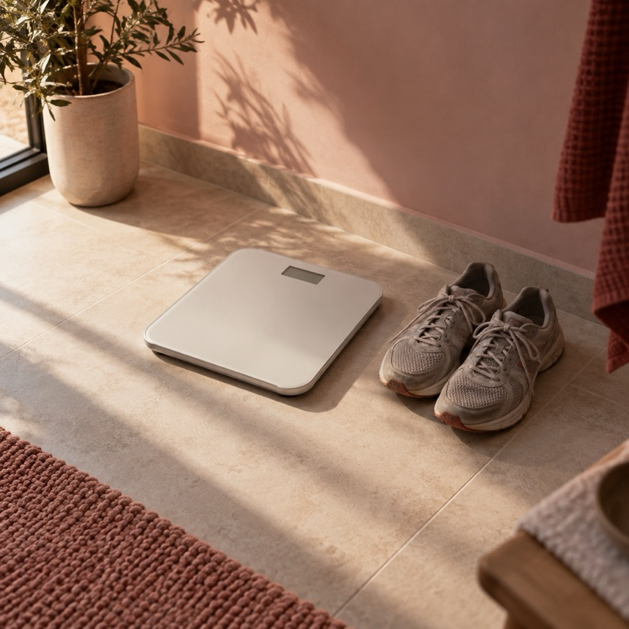
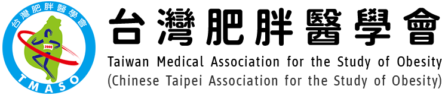
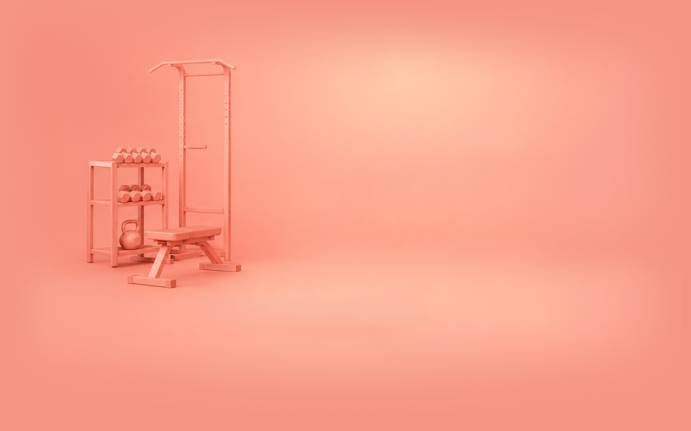
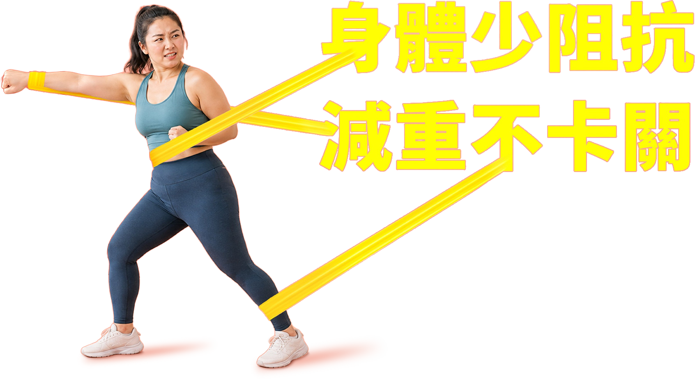
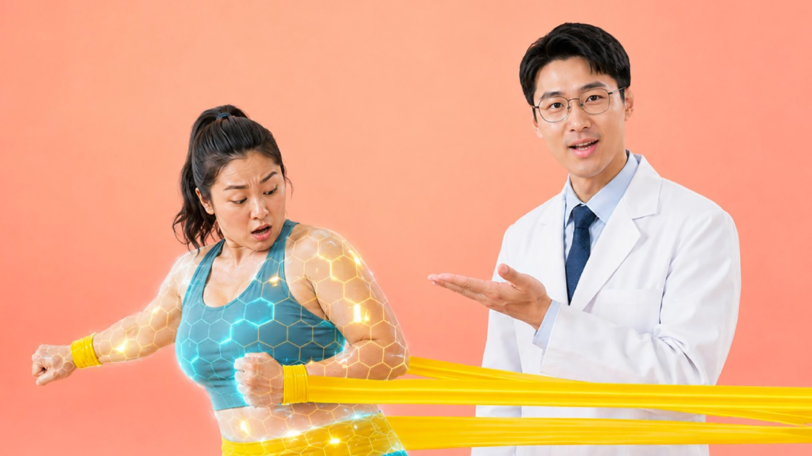

01明明控制飲食、規律運動，體重卻卡住不動

尋找專業協助

一起跨出認識身體的第一步

反覆減重、
一再復胖？
體重管理，不只是體重計上的數字。
把多項指標放在一起，才能看懂身體的真實狀態。
以身高和體重計算的初步體位指標。
台灣成人標準（TMASO 台灣成人肥胖臨床實證指引）
反映腹部脂肪堆積程度。
即為腹部肥胖
評估體脂肪分布，內臟脂肪較高者代謝風險也較高。
與較高的心血管代謝風險有關
無論 BMI 是否達標，都應納入肥胖評估。
即可視為脂肪過多
單一指標難以完整反映脂肪分布與代謝風險，僅憑 BMI 診斷，可能低估部分高體脂率個案的代謝風險。臨床上應結合多項工具評估，以提高辨識度與準確性5。
花 1 分鐘計算你的 BMIBMI 是第一線篩檢工具，作為了解自己狀況的第一步。 立即檢測 BMI完成上方的 BMI 計算機，結果會從這裡印出來。
身高 165 公分｜體重 68 公斤
BMI 計算機僅供參考，並非診斷工具。
下載自我評估結果，幫助您更有效率地與醫師溝通，共同找出適合您的體重管理方式。
準備好與醫師討論了嗎？您可以透過以下管道，找到適合的醫療院所：
諮詢專業醫師